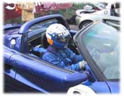

前置きが長くなりましたが、それぐらい今年は車の趣味を一歩進ませようと言うことなのです。で、レースは筑波サーキットで行われたのですが、「ヨーロピアンチャレンジ イン 筑波」というイベントの中の一つのレースとして「ＡＤＶＡＮ ＥＬＩＳＥ ＣＵＰ」というレースに出ました。招待選手を含めて全部で１７台のレースでした。レースといってもレース形式の走行会という感じで、ライセンスもいらないので僕でも出れるというわけです。
朝８時位から、１０分間走って、その中で一番タイムがよかったのが選ばれるという予選に。改造したのが効いたのか、ＡＤＶＡＮのＳタイヤが良いのか、前回までのスクールで筑波サーキットを走っていたときは１分１５秒台しか出なかったのが、自己最高の１’１３’４０９でした。サーキット自体ここ２ヶ月の間に２回エリーゼドライビングスクールで走った以外、ほとんど走ったことがなかったのに、いきなり走ってこのタイムが出たので自分としてはかなり満足です。トップとの差は０’０６．３８３で１１位でした。
 このヨーロピアンチャレンジはお金を取ってお客サンを入れます。朝一番だったのでお客サンはまだ少なかったのですが、なんかかなり緊張しました。本選は１０時くらいからだったのですが、この間は初レースに向けてドキドキでした。時間になって予選の順位どうりにメインストレートのグリッドについた時は、かなりアドレナリンが出ていたのでは？
このヨーロピアンチャレンジはお金を取ってお客サンを入れます。朝一番だったのでお客サンはまだ少なかったのですが、なんかかなり緊張しました。本選は１０時くらいからだったのですが、この間は初レースに向けてドキドキでした。時間になって予選の順位どうりにメインストレートのグリッドについた時は、かなりアドレナリンが出ていたのでは？

そして、フォーメーションラップの後、もう一度グリッドについてスタートの瞬間を待ちました。
レッドシグナルが点灯した後、グリーンシグナルが点灯した時、頭の中がかなり真っ白でしたが、ちゃんとスタートすることが出来ました。
ホッとしたのもつかの間、２台前のグリッドにいた黄色いエリーゼがスタートできずに止まっていたので、避けなきゃ！とかなりあせりました。そして１コーナーに突っ込んでいったのですが、なんとか接触もせずにコーナーを立ち上がり、２速から３速にシフトアップして第１ヘアピンに突っ込んでいったところ、何台か前の車が１ヘアでスピン！ これを避けるときは、かなり危ないと思いましたね。でもなんとかやり過ごして立ち上がっていき、その後はなんとか走っていけました。
ちなみに、土屋圭市さんはプロなので、イベントを盛り上げるために最後尾スタートで追いかけてきたのですが、僕は３周目辺りで抜かれてしまいました。でも、プロの人と走れるのだけでもかなり幸せな気分でした。

２度ほど僕もリアが流れてスピンしそうになりながらも、無事そのまま最後まで走りチェッカーを受けました。ほっ…。無事に終わった時、たった１０周しか走らなかったのに、かなりの緊張感だったからか、かなり全身に汗をかいていました。初レースだったのでいい汗をかいたってかんじでした。
しかしＦ１ドライバーはこれよりも、もっと極限の状態で１時間半も走ってると思うと、ほんと凄いなーと思いますね。お客サンがいる所で走るのって、ほんと凄い緊張ですよ。あと、予選の後に『ＳｐｏｒｔｉｎｇＴＩＰＯ』という雑誌の取材を受けました。ゲームの仕事で取材を受けたことは何度もあるけど、プライベートで取材を受けるのってなんかとっても照れくさかったです。もしかすると載ってないかもしれませんが今月末か来月頭辺りに出るらしいのでチェックしようと思っています。

|